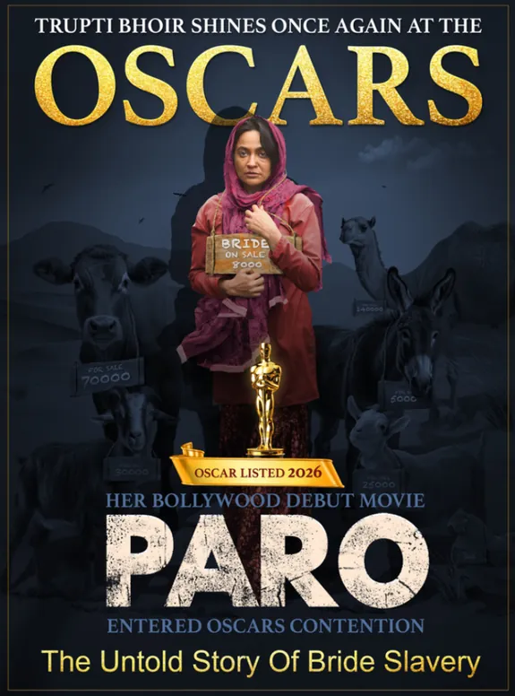

Tujhya Mazhya Sansarala Ani Kay Hav
Producer · Lead Actress
Social impactAn inspiring farmer's story promoting farming. State awards for best music & singers.
Two decades of cinema with a conscience — from the Marathi stage in 2003 to PARO, a debut Hindi film that carried the fight against bride slavery to Cannes, Harvard and the Oscar eligibility list.
Trupti Bhoir began on the Marathi theatre stage in 2003. In 2006 she began producing her own films, so she could tell the stories others wouldn't.
Across nine films as producer, writer, director and lead actress, she has taken on farmer distress, mental health, body shaming, terrorism, child marriage, cyber-crime and human trafficking. Touring Talkies helped change the law for India's travelling cinemas, and Oscar-winning composer A.R. Rahman adopted one of them.
In 2020, during the pandemic, she founded Shelter Foundation. It now runs skill training, relief work and free schooling for tribal communities in Maharashtra's Palghar district, and documents bride trafficking in Haryana's Mewat region.

The Untold Story of Bride Slavery
In Mewat, across Haryana and Rajasthan, women are bought and sold as brides. Locals call them Paro or Molki. The practice grows out of skewed sex ratios and poverty. Trupti wrote, produced and plays the lead in the film. She calls it “not cinema, but a movement” against human trafficking.
The first look at Paro was unveiled at the Cannes Film Festival in France.
Panelist at “The Power of Her Voice: Amplifying the Voices and Visions of Women in Global Cinema”.
On International Women's Day, Shelter Foundation announced a collaboration with LA Fashion Week. The event hosted its first-ever film screening, featuring Paro.
A full-house screening at the 78th Marché du Film, Festival de Cannes.
Two awards at the Los Angeles Tribune International Film Festival (LATIFF).
Special screening at Harvard Kennedy School. A screening and Q&A at Balliol College, Oxford. A talk on the film's global impact at TEDx Manhattan Beach.
Best Actress recognition, presented alongside Norway's Culture Minister and India's Ambassador.
Paro entered the Oscar eligibility list and was selected for the 34th Raindance Film Festival (Best International Feature category).
Every production takes on a social issue, and several led to real change on the ground. The work spans Marathi and Hindi cinema, and she has held nearly every role behind and in front of the camera.
Swipe
Producer · Lead Actress
Producer · Lead Actress
Producer · Lead Actress
Producer · Lead Actress
Producer · Writer · Lead Actress
★ Oscar eligibility list 2014Producer · Writer · Director
Producer · Writer · Director · Lead Actress
Producer · Writer · Lead Actress
★ Oscar eligibility list 2026Producer · Writer · Director · Actress
Began her career as a Marathi theatre actress.
Started her own production house to make socially driven cinema.
Tujhya Mazhya Sansarala Ani Kay Hav won state awards for Ajay–Atul's music and for its singers.
Agadbam: first female actor to wear full-body prosthetic makeup. Won the State Award for Best Actress.
Selected at festivals in Australia, Hungary, Japan, Indonesia, The Hague, Chicago and Los Angeles. Won Best Actress in Japan.
Founded her NGO during the Covid pandemic to serve tribal communities in Palghar.
First Hindi film inaugurated at Cannes. Jury member for the 70th National Film Awards.
Appointed to the Censor Board. Spoke at TEDx Manhattan Beach. Paro screened at Cannes, Harvard and Oxford.
Paro entered the Oscar eligibility list and was selected for Raindance. Jury member at the Cannes International Film Festival Film Bazaar.
Recognition from state award juries, international festivals and city and state governments in the U.S. One honour stands out: she shared the Jagran Film Festival's Best Actress honour with the late Sridevi.
Los Angeles Tribune International Film Festival: Paro
Bollywood Festival Norway: Paro
City of Los Angeles, City of Artesia & California Legislature
International Chamber of Media & Entertainment Industry (ICMEI)
Feature Films, West panel: Ministry of Information & Broadcasting
Jaipur International Film Festival: Touring Talkies
Plus Best Actress nominations at the Kerala, Jaipur & Jagran festivals
Hello Jai Hind
Agadbam, also nominated for Best Comedy Actor
For her first production, plus her own Best Choreographer nomination for “Gorya Gorya Galavari”
Shelter Foundation started during the Covid lockdowns, working with tribal communities in Maharashtra's Palghar district. Village women there were working in chemical factories that put their health at risk. The foundation trained more than 4,500 people and helped them into safer jobs. It has since expanded to Haryana and onto the global stage.
Visit shelterfoundation.inFree education for 480 tribal students in Grades 6–12 in Palghar.
Skill-development programmes for underprivileged women in Dahanu and across Jawhar, Wada, Vikramgad and Mokhada (2022–2024).
Food, blankets, saris, school supplies and medical camps, including a winter relief drive in remote Vavar-Vangani, Jawhar (Dec 2024 – Feb 2025).
Since 2025 the foundation has been documenting “Paro” brides in Nuh, Haryana and parts of Rajasthan. Close to 5,000 cases are recorded so far across 37+ villages, and the count is still growing.
Warli painting is the tribal art of Palghar district, home to the communities Shelter Foundation works with. Its best-known scene is the tarpa dance: villagers circling the tarpa player, hand in hand. The dancing figures of the Trupti Bhoir Filmss emblem come from the same tradition.
Cinema isn't just about entertainment; it's about giving a voice to the voiceless.Trupti Bhoir · TEDx Manhattan Beach
Red carpets, lecture halls and village courtyards: a look at the places Paro and Shelter Foundation have reached.
Follow the journey
For film collaborations, screenings, speaking invitations, jury roles or partnerships with Shelter Foundation, reach out directly.